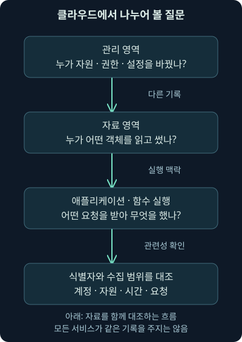
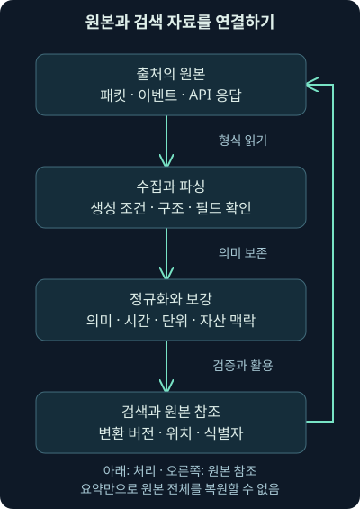
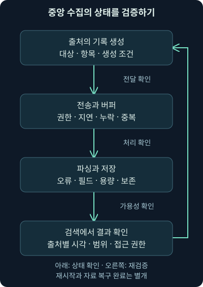

클라우드 관측과 로그 중앙화
첫째 날 6강. 클라우드의 관리·자료·실행 기록과 중앙 검색·변환을 이해하고, 자체 기록의 실행 식별과 용량 계산을 확인합니다.
1. 서버가 보이지 않아도 조사 질문은 남습니다
가상 회사가 문서 공유 기능을 외부 클라우드 서비스로 옮겼습니다. 직원은 여전히 로그인하고 파일을 공유하지만 보안팀은 서비스의 운영체제에 들어갈 수 없습니다. 이제 무엇을 수집해야 할까요? “우리 서버가 아니니 관측할 수 없다”와 “제공자가 다 기록할 테니 괜찮다” 사이에서 실제 제공 자료와 책임을 확인해야 합니다.
5강의 네트워크·단말 관측을 이어 이번 6강에서는 클라우드 서비스의 경계, 관리·자료 작업 기록, 중앙 검색과 형식 변환, 안전한 기록 연결을 배웁니다. 내용을 충분히 설명하기 위해 네트워크 관측 모듈을 두 회차로 나눴으며 이벤트·경보·사건 구분은 다음 7강으로 이어갑니다.
회사·계정·주소·파일·식별자는 자체 가상 사례입니다. 뒤의 Python 계산은 직접 만든 기록으로 로컬 실행해 확인했습니다. 실제 클라우드 계정·보안 장비·VM·PCAP을 조회하거나 설정·공격·차단한 결과는 아닙니다.
2. 클라우드는 어디까지 맡기는지에 따라 관측도 달라집니다
임대한 방을 직접 꾸미는 경우와 완성된 사무 서비스를 이용하는 경우를 비교해 보세요. 내가 관리하는 범위가 다르면 직접 확인할 수 있는 내부도 다릅니다. 클라우드에서도 컴퓨팅 자원, 플랫폼, 완성된 소프트웨어 중 어디까지 제공받는지에 따라 기록의 출처와 권한이 달라집니다.
IaaS는 Infrastructure as a Service로, 가상 서버 같은 기반 자원을 제공받는 방식입니다. 게스트 운영체제와 프로그램을 관리한다면 그 안의 로그·계정·설정·보안 도구도 자신의 관리 범위에 들어갈 수 있습니다. 그렇다고 호스트 기반 시설의 모든 내부 기록까지 보는 것은 아닙니다.
클라우드 VM 이미지에 에이전트가 미리 설치되어 있다고 단정하지 않습니다. 설치·활성화·전송 권한·대상 로그·저장 위치·보존 기간을 실제로 확인해야 합니다. 이미지 이름에 ‘보안’이나 ‘관리형’이 있다는 사실만으로 필요한 기록이 수집되지는 않습니다.
3. 플랫폼을 쓰면 질문을 서비스 기능으로 옮깁니다
PaaS는 Platform as a Service로, 애플리케이션이나 데이터베이스를 실행할 플랫폼을 제공받는 방식입니다. 관리형 데이터베이스라면 기반 운영체제에 직접 에이전트를 설치할 수 없을 수 있습니다. 그 대신 접속·인증·조회·권한 변경·오류·설정 변경 기록이 무엇을 제공하는지 확인합니다.
모든 질의 내용과 결과를 무조건 남기자는 뜻은 아닙니다. 성능·비용·민감 정보·지원 기능을 고려해 필요한 행위와 필드를 정합니다. 데이터베이스 접속 성공과 특정 고객 자료를 읽은 사실은 다른 기록을 필요로 할 수 있습니다.
플랫폼이 정상 동작한 사실과 자료의 승인된 사용도 구분합니다. 정상 계정으로 수행된 비인가 조회는 시스템 오류 없이 실행될 수 있습니다. 서비스의 정상 상태 지표만 보아서는 업무 행위의 적절성을 판단하기 어렵습니다.
4. 완성된 소프트웨어에서는 접근과 작업을 나누어 보기
SaaS는 Software as a Service로, 문서 공유·메일·인사 서비스처럼 완성된 소프트웨어를 이용하는 방식입니다. 운영체제보다 사용자와 권한, 접근·공유·변경·다운로드·관리 작업의 감사 기록이 중요해집니다.
가상 문서 서비스 portal.example에 로그인한 기록이 있다고 합시다. 로그인이 성공했다는 사실만으로 어떤 문서를 읽고 누구에게 공유했는지는 알 수 없습니다. 인증 기록과 애플리케이션 작업 기록의 식별자·시간·세션을 연결해야 합니다.
제공되는 감사 기능과 조회 범위는 서비스·계약·권한·설정에 따라 달라집니다. 내보내기 기능이 없거나 과거 자료가 보존되지 않을 수도 있습니다. 도입 전에 필요한 조사 질문을 서비스가 실제로 지원하는지 확인하면 뒤늦게 빈칸을 발견하는 일을 줄일 수 있습니다.
5. 함수 실행 서비스에는 어떤 흔적이 필요할까요?
FaaS는 Function as a Service로, 정해진 함수 코드를 실행하는 서비스를 뜻합니다. 함수는 특정 입력을 받아 작업을 수행하는 코드 단위입니다. ‘서버리스’라는 표현은 사용자가 서버 운영을 직접 관리하지 않는다는 관점이며 실제 실행 기반이 없다는 뜻은 아닙니다.
호출 횟수·오류·실행 시간과 함수가 기록한 작업을 함께 봅니다. 호출이 급증해도 정상 업무 증가·재시도·오류 반복·오용 등 여러 원인이 가능합니다. 입력과 출력 전체를 그대로 로그에 넣으면 비밀 정보나 개인정보가 노출될 수 있으므로 요청 식별자·결과·필요한 맥락을 선별합니다.
2026년 11월 4일 확인한 AWS Lambda 문서는 실행 역할의 필요한 권한이 있을 때 CloudWatch Logs로 기록을 보내는 동작을 설명합니다. 실행 역할은 코드가 서비스 자원에 접근할 때 사용하는 권한 묶음입니다. 설정·권한·필터·전달 지연을 확인해야 하며 이 강의에서 Lambda를 실제 호출하지 않았습니다.
6. 관리 작업과 자료 작업은 같은 로그가 아닙니다
관리 영역, management plane은 계정·권한·자원·서비스 설정을 생성·변경·삭제하는 활동을 다루는 관점입니다. 자료 영역, data plane은 자원 안의 문서·객체 등을 읽거나 쓰는 실제 이용 활동을 다루는 관점입니다. 서비스에 따라 구분과 기록이 다르므로 해당 문서를 확인해야 합니다.
관리자가 저장소 정책을 바꾼 기록은 중요하지만 그 뒤 누가 어떤 객체를 읽었는지까지 모두 포함하지 않을 수 있습니다. 객체는 클라우드 저장소에서 파일과 메타데이터를 묶어 다루는 단위로 생각하면 됩니다. 관리 변경과 자료 접근을 각각 확인해야 합니다.

그림의 관리·자료·실행 기록을 서로 대신 읽지 마세요. 공통 계정·자원·요청 식별자가 있으면 연결에 도움이 되지만 제공 범위와 시간·권한은 따로 검증해야 합니다.
7. CloudTrail의 기본 화면을 전체 활동으로 읽지 않기
AWS의 CloudTrail은 계정과 자원 관련 활동을 기록하는 서비스입니다. API는 프로그램이 다른 서비스 기능을 요청하는 인터페이스입니다. 콘솔 조작 외에도 명령 도구와 프로그램의 API 요청이 중요한 관측 대상이 됩니다.
2026년 11월 4일 확인한 Event history 문서는 한 AWS 리전의 최근 90일 관리 이벤트를 보는 범위를 설명합니다. 리전은 클라우드 자원을 운영하는 지역 구분입니다. 이 화면을 모든 계정·지역·자료 작업의 영구 보관소로 가정하지 않습니다.
객체 읽기 같은 데이터 이벤트는 다른 수집 선택과 조건이 필요합니다. CloudTrail 데이터 이벤트 문서는 trail과 event data store가 기본적으로 데이터 이벤트를 기록하지 않는다고 설명합니다. trail과 event data store는 지속 기록·보관을 구성하는 방식입니다. 필요한 대상·행위·비용·보존을 확인해야 하며 기록을 나중에 켰다고 과거의 미수집 활동이 복원되지는 않습니다.
8. 가상망 플로 기록도 패킷 전체는 아닙니다
VPC는 Virtual Private Cloud로, 클라우드 안의 논리적인 가상 네트워크 환경입니다. AWS VPC Flow Logs는 선택한 네트워크 범위의 통신 정보를 기록하는 수단입니다. 패킷 원본이나 프로그램 실행 기록과는 다릅니다.
흐름이 허용으로 기록되었다고 애플리케이션 작업이 성공한 것은 아닐 수 있습니다. 기록의 집계·전달 지연과 누락 상태, 필드 의미를 확인합니다. 원래 주소와 중간 장치를 대표하는 주소가 다를 수도 있으므로 실제 제공 필드와 경로를 대조합니다.
2026년 11월 4일 확인한 AWS의 Flow Logs 한계 문서는 모든 IP 트래픽을 기록하지 않는다고 설명합니다. 예를 들어 Amazon 제공 DNS 서버로의 트래픽과 DHCP 등이 제외될 수 있습니다. DHCP는 단말에 주소 등 네트워크 설정을 전달하는 프로토콜입니다. 따라서 이 로그에 이름 조회가 안 보인다는 사실만으로 조회가 없었다고 결론 내리지 않습니다.
9. 한 자료가 다른 자료를 완전히 대신할 수 있을까요?
네트워크는 상대·시간·방향·양과 프로토콜의 일부 맥락을 보여 줄 수 있습니다. 단말은 실행 주체와 파일·설정의 맥락을 더할 수 있고, 클라우드 감사 기록은 서비스 내부의 작업을 보여 줄 수 있습니다. 어느 자료가 더 필요한지는 조사 질문과 현재의 빈틈에 달려 있습니다.
가상 PC가 알려지지 않은 주소와 연결했다고 합시다. 평판 목록에 없다는 것은 목록에서 못 찾았다는 뜻이지 안전 판정이 아닙니다. 프로그램 실행과 파일 식별·사용자 활동을 추가 확인합니다. 반대로 단말이 보고를 멈췄다면 다른 위치의 기록이 관측을 보완할 수 있습니다.
비용과 복잡성을 무시하고 모든 자료를 무한히 모을 수는 없습니다. 서로 다른 실패 조건을 가진 관측이 중요한 위험을 얼마나 보완하는지 평가합니다. 여러 도구가 같은 원천에 의존하면 숫자는 많아도 독립된 근거는 적을 수 있습니다.
10. 자료 출처를 역할로 읽어 보기
네트워크의 플로·방화벽·IDS와 중계 서비스, 이름 조회·웹·메일 서버 기록은 통신의 다른 부분을 설명합니다. 프록시는 통신을 대신 중계하는 서비스이며 설정에 따라 사용자·목적지·웹 요청 맥락을 남길 수 있습니다. WAF는 웹 애플리케이션 요청에 정책을 적용하는 방화벽입니다. 보이는 내용과 차단 결과는 제품·경로·암호화 조건에 따라 다릅니다.
메일 전달에 쓰는 SMTP, 신원 확인과 서비스 인증에 쓰는 Kerberos, 주소 설정을 전달하는 DHCP의 기록도 각각 다른 질문에 답합니다. 예를 들어 메일 전달 시도와 사용자 인증 성공은 같은 결과가 아닙니다. 프로토콜 이름을 많이 모으기보다 어떤 활동을 어느 서버가 기록했는지 연결해야 합니다.
단말의 인증·실행·파일·보안 제품 기록과 업무 애플리케이션의 감사 기록도 함께 봅니다. 어떤 문서를 공유했는지 확인하려면 계정 로그인뿐 아니라 실제 작업 기록이 필요합니다. 단말 기록의 출처와 중앙 분석 화면의 판정도 구별해야 합니다.
| 조사 질문 | 우선 연결할 자료 | 주의할 해석 |
|---|---|---|
| 어느 상대와 얼마나 연결했나? | 플로·방화벽·연결 기록 | 내용·프로그램이 자동 확정되지는 않음 |
| 어떤 실행이 연결했나? | 단말 실행·연결 식별자 | PID 재사용·시간·단말 구분 |
| 누가 문서를 공유했나? | 인증·서비스 감사 기록 | 로그인 성공만으로 공유 확정 불가 |
| 누가 수집 설정을 바꿨나? | 관리·변경·권한 기록 | 현재 설정과 과거 수집 상태는 별개 |
11. 중앙화의 목표는 같은 질문으로 찾을 수 있게 하는 것
여러 도구에 주소를 하나씩 입력하며 기록을 찾으면 시간 범위와 필터를 다르게 적용하기 쉽습니다. 같은 사건의 시각·단말·계정·주소를 공통으로 찾아 관련 자료로 이동할 수 있으면 누락과 반복을 줄일 수 있습니다. SIEM 같은 중앙 검색 체계가 이를 도울 수 있습니다.
하지만 모든 패킷·대용량 파일을 하나의 데이터베이스에 그대로 넣어야 한다는 뜻은 아닙니다. 중요한 메타데이터와 원본 위치를 검색하고, 필요한 원본 저장소로 연결하는 설계도 가능합니다. 메타데이터는 연결 시각·대상·크기처럼 내용이나 활동을 설명하는 정보입니다.
중앙 화면에 결과가 없을 때 그 자료가 실제로 수집되지 않았는지, 검색 권한이 없는지, 다른 저장소에 있는지 구별해야 합니다. 중앙 검색은 조사 출발점을 단순하게 해 주지만 수집 범위와 전문 도구의 세부 분석까지 없애 주지는 않습니다.
12. 원래 형식이 모두 텍스트인 것은 아닙니다
단말 기록도 이진 형식의 이벤트 파일, 구조화된 이벤트, 데이터베이스, API 응답처럼 여러 형태가 있습니다. 이진 형식은 사람이 글자로 바로 읽는 방식이 아닌 정해진 바이트 구조의 저장 형식입니다. Windows 이벤트의 원본 파일도 단순한 한 줄 텍스트와 같지 않습니다.
로그를 옮길 때는 수집기·에이전트·커넥터가 형식을 읽어 구조화해 전달할 수 있습니다. 커넥터는 특정 출처의 자료를 가져와 연결하는 구성 요소입니다. JSON은 이름과 값·목록을 중괄호 등의 구조로 표현하는 데이터 형식이며 기록 전달에 자주 쓰입니다.
어떤 SIEM이 직접 받을 수 있는 형식은 제품과 통합 기능에 따라 다릅니다. “SIEM은 무조건 텍스트만 받는다” 또는 “모든 PCAP을 그대로 이해한다”처럼 고정하지 않습니다. 변환 과정과 지원 범위를 확인하고 원본을 별도로 보존할지 설계해야 합니다.
13. 패킷을 요약 기록으로 만들면 무엇이 남나요?
패킷 관측 도구는 통신을 해석해 연결·이름 조회·웹 요청 등의 기록을 만들 수 있습니다. Zeek 같은 네트워크 분석 도구의 연결 기록도 이런 접근의 예입니다. 이 강의에서 Zeek를 실행하거나 특정 캡처를 변환한 것은 아닙니다.
2026년 11월 4일에 Zeek의 conn.log 설명을 대조했습니다. 연결의 상대·시간·기간·프로토콜 같은 메타데이터를 읽는 관점의 참고입니다. 링크는 개발 문서 분기이므로 배포 버전의 필드·설정·분석기 동작은 해당 버전에서 확인해야 합니다.
요약 기록에는 검색하기 좋은 정보가 남지만 원래 바이트와 모든 시간 순서가 그대로 보존되지는 않을 수 있습니다. 반대로 그 정보만으로도 관련 단말과 시간 범위를 빨리 좁힐 수 있습니다. 질문에 맞는 상세도와 보존 비용을 함께 고려합니다.

그림에서 정규화한 자료는 원본을 완전히 대체하지 않습니다. 원본의 식별자와 위치, 변환 버전·시각·필드의 의미를 남겨 나중에 오류를 확인할 수 있게 합니다. 패킷을 요약했다고 원본 패킷이 자동 보관되지는 않습니다.
14. 파싱·정규화·보강은 각각 다른 처리입니다
파싱은 원래 자료를 읽어 항목으로 나누는 일입니다. 정규화는 출처마다 다른 이름·형식·단위를 공통 기준으로 맞추는 일입니다. 보강은 자산 소유자나 중요도 같은 맥락을 추가하는 일입니다. 앞 단계가 틀리면 뒤에서 검색을 잘해도 잘못된 결과를 얻을 수 있습니다.
예를 들어 SourceIp와 src_ip를 같은 이름으로 맞출 수 있지만, 한 출처가 연결 시작자를 뜻하고 다른 출처가 패킷 출발지를 뜻한다면 이름만 통일해서는 안 됩니다. 내부·외부 방향도 센서 위치에 따라 달라집니다. 주소 변환과 공인 주소 공유가 있으면 주소 하나를 사용자 한 명으로 단정하기 어렵습니다.
시각은 원래 시간대와 발생·수신·처리 시각을 보존하며 비교합니다. 성공이라는 필드도 인증 성공인지, 연결 허용인지, 실제 작업 완료인지 의미가 다릅니다. 필드를 편리하게 바꾸는 과정에서 이 구별을 지우지 않도록 주의합니다.
15. 자체 기록에서 실행과 연결을 맞추어 봅시다
다음은 직접 만든 기록 세 개를 코드 안에 표현한 예제입니다. 같은 단말의 프로세스 두 개가 서로 다른 시간에 같은 PID 4240을 사용합니다. 첫 번째는 parcel-helper.exe, 두 번째는 inventory-updater.exe입니다. 파일 이름은 설명용이며 실제 실행 파일을 만들거나 실행하지 않았습니다.
guid의 demo-A, demo-B는 실행 식별 개념을 설명하기 위한 짧은 표기입니다. 실제 Sysmon GUID의 표기 형식이나 제품 원본 로그가 아닙니다. 연결 기록에는 demo-A가 관측되었고 시각은 UTC보다 11시간 앞선 표기입니다. 원래 표기는 유지한 채 비교 시각을 UTC로 바꿔 봅니다.
from datetime import datetime, timezone
processes = [
{"host": "LAB-45", "pid": 4240, "guid": "demo-A",
"image": "parcel-helper.exe", "time": "2026-11-04T09:00:02Z"},
{"host": "LAB-45", "pid": 4240, "guid": "demo-B",
"image": "inventory-updater.exe", "time": "2026-11-04T11:00:00Z"}
]
connection = {
"host": "LAB-45", "pid": 4240, "guid": "demo-A",
"dst_ip": "198.51.100.80", "dst_port": 8443,
"time": "2026-11-04T20:00:06+11:00"
}
same_pid = [p for p in processes if p["pid"] == connection["pid"]]
same_execution = [p for p in processes
if (p["host"], p["guid"]) ==
(connection["host"], connection["guid"])]
utc_time = datetime.fromisoformat(connection["time"]).astimezone(timezone.utc)
print("PID-only candidates:", len(same_pid))
print("host-and-execution candidates:", len(same_execution))
print("connection UTC:", utc_time.isoformat())processes는 프로세스 기록의 목록이고, 중괄호 안에는 항목 이름과 값이 들어 있습니다. connection은 연결 기록입니다. p["pid"]는 각 기록의 PID 값을 읽습니다. 첫 비교는 번호만 같으면 후보에 넣으므로 두 실행을 모두 고릅니다.
둘째 비교는 단말과 실행 식별자를 한 쌍으로 묶어 비교합니다. 이 자체 자료의 가정 안에서는 demo-A의 한 실행만 남습니다. fromisoformat은 시간대가 있는 문자열을 시각으로 읽고, astimezone(timezone.utc)는 같은 순간의 UTC 표현을 만듭니다. len은 후보의 개수를 셉니다.
16. 직접 계산한 결과와 그 한계
앞 코드를 로컬 Python 3.12.14에서 그대로 실행해 다음 출력을 확인했습니다. 새 네트워크 연결을 만든 것이 아니라 메모리에 적은 가상 기록의 값을 비교한 결과입니다.
PID-only candidates: 2
host-and-execution candidates: 1
connection UTC: 2026-11-04T09:00:06+00:00시간 변환은 20:00:06 − 11시간 = 09:00:06 UTC입니다. 첫 실행의 생성 시각 09:00:02보다 4초 뒤입니다. 두 번째 실행은 11:00에 생성되어 시간도 맞지 않지만 번호만 비교하면 후보에 섞입니다. 프로세스 생존 기간과 시간 오차까지 있다면 추가로 확인해야 합니다.
이 결과는 parcel-helper.exe가 악성이라는 뜻이 아닙니다. 기록이 정확하다는 자체 가정 아래 어떤 실행과 연결을 묶을지를 구별한 것입니다. 실제 자료에서는 단말 식별·부팅/세션·필드 생성 조건·중복·오차·수집 손실과 원본까지 대조합니다. 식별자가 하나로 좁혀졌다고 원격 작업 성공이나 자료 유출까지 확정하지 않습니다.
17. 필드가 부족한 경우에는 결론의 강도를 낮춥니다
연결 기록에 실행 식별자가 없고 단말·주소·시간만 있다고 합시다. 시간상 가까운 프로그램을 후보로 찾을 수는 있지만 같은 단말의 다른 프로그램이 연결했을 수도 있습니다. “같은 시각에 실행됐다”와 “이 실행이 연결 주체로 기록됐다”는 다른 수준의 근거입니다.
다른 주소를 쓰는 프록시·가상망·공유 공인 주소가 개입하면 더욱 조심해야 합니다. 요청 식별자, 프록시 사용자·세션, 단말 연결 기록처럼 직접 연결하는 자료를 찾아봅니다. 충분한 정보가 없으면 후보와 미확인 상태를 명시합니다.
검색 결과가 없는 경우에도 수집 필드·권한·기간·저장소·변환 오류를 확인합니다. 원본에는 있었지만 정규화 과정에서 버린 필드일 수 있습니다. 기본 화면에서 안 보인다는 사실을 원천 자료의 부재로 확대하지 않습니다.
18. 저장 용량도 단위를 맞춰 계산합니다
가상 설계에서 초당 평균 200개 이벤트, 이벤트당 평균 1,000바이트를 수집한다고 합시다. 하루는 24 × 60 × 60 = 86,400초이므로 원시 자료량의 단순 추정은 200 × 1,000 × 86,400 = 17,280,000,000바이트/일입니다.
십진 단위로는 1 GB가 10억 바이트이므로 17.28 GB/일입니다. 1 GiB가 2의 30제곱 바이트인 이진 단위로는 약 16.09 GiB/일입니다. 같은 바이트를 다른 단위로 표현한 것이므로 둘을 더하거나 서로 다른 용량이라고 해석하지 않습니다.
7일이면 단순 원시 자료는 17.28 × 7 = 120.96 GB입니다. 실제 저장에는 압축·색인·복제·변환·추가 메타데이터·버퍼·변동량이 영향을 줍니다. 이 숫자는 자체 계산이며 실제 제품의 비용·저장 요구·보존 보장이 아닙니다. 색인은 빠르게 찾기 위해 만드는 검색용 구조입니다.
| 계산 단계 | 자체 가정과 결과 | 포함하지 않은 조건 |
|---|---|---|
| 초당 자료 | 200 × 1,000 = 200,000바이트 | 순간 급증과 이벤트 크기 편차 |
| 하루 원시량 | 17.28 GB / 약 16.09 GiB | 압축·색인·복제 등 |
| 7일 원시량 | 120.96 GB | 추가 보존본·장애 버퍼·운영 여유 |
정확한 평균을 모른다면 실제 표본과 최댓값을 확인하고 보수적으로 검증해야 합니다. 비용을 줄이려고 필드를 버리면 나중에 원래 질문에 답하지 못할 수 있으므로 보존 우선순위와 조사 요구를 함께 정합니다.
19. 중앙 수집의 장애도 관측 대상입니다
전송 지연·큐 포화·인증 실패·할당량 제한·파싱 실패·저장 부족이 생길 수 있습니다. 큐는 처리할 자료를 순서대로 기다리게 하는 구조입니다. 재전송 때문에 같은 기록이 두 번 들어오면 단순 건수가 늘 수 있으므로 원천 식별자와 중복 처리 조건도 필요합니다.
중앙 화면이 최신 기록을 보여 줘도 모든 출처가 정상이라는 뜻은 아닙니다. 중요한 출처별 마지막 수신 시각과 처리 오류, 평소량 대비 변화, 필드 누락을 확인합니다. 4강에서 배운 발생·수신·검토 시간의 구분도 유지합니다.
문제가 생긴 자료는 조용히 버리기보다 허용된 보관 공간과 오류 기록을 통해 재처리할 수 있게 설계합니다. 다만 임시 저장소에도 민감한 정보가 있으므로 권한과 보존·삭제 조건이 필요합니다. 장애 시 원본을 언제까지 다시 가져올 수 있는지도 알아야 합니다.

그림의 끝은 수집기를 재시작했다는 사실이 아니라 필요한 자료가 다시 도착하고 올바르게 해석되며 검색되는지 확인하는 것입니다. 누락된 기간은 별도로 표시해야 합니다.
20. 많이 모으는 것과 잘 모으는 것은 다릅니다
필요한 조사 질문에서 출발해 자료의 고유한 가치·비용·보존·민감도·신뢰성을 평가합니다. 같은 내용의 중복 복사보다 현재 못 보는 중요한 활동의 기록이 더 유용할 수 있습니다. 반대로 요약만 남겼다가 조사에 필요한 원본을 잃을 수도 있습니다.
중앙화하면 한 곳에 많은 정보가 모이므로 접근 제어와 검색 감사도 중요해집니다. 분석에 필요한 사람에게 필요한 범위로 접근시키고, 비밀 값의 마스킹과 원본 보존·검증의 관계를 정합니다. 마스킹은 민감한 값이 그대로 드러나지 않도록 가리거나 대체하는 처리입니다. 어떤 필드를 바꿨는지 기록해야 결과 해석이 가능합니다.
계정·권한·클라우드 수집 설정이 바뀌면 관측도 달라집니다. 관리 기록과 수집 상태를 서로 확인해 자료가 줄어든 이유를 찾습니다. 공격자의 방해 가능성을 열어 두되 장애나 정상 변경도 함께 검증합니다.
21. 파일 전달에서 침해 범위까지 질문을 연결하기
5강의 가상 다운로드 사례로 돌아가 봅시다. 네트워크에서 파일 전달, 단말에서 실행, 서비스에서 설정 변경이 보였다면 각 자료의 식별·시간·의미를 맞춥니다. 파일이 전달된 것과 실행된 것, 원격 서버가 작업을 수행한 것, 자료가 외부에 유출된 것은 각각 다른 결론입니다.
네트워크와 단말 중 하나만 남았을 때도 할 수 있는 분석은 있습니다. 다만 어떤 질문에 답하지 못하는지 정확히 적어야 합니다. 예를 들어 네트워크 요약만으로 로컬 권한과 파일 변경을 알 수 없고, 단말의 연결 기록만으로 원격 서비스가 처리한 전체 내용을 알 수는 없습니다.
가상 파일이 생소하다고 즉시 분석용 외부 서비스에 업로드하는 절차를 여기서 실행하지 않습니다. 자료의 민감도·권한·공개 범위를 고려해야 하며 실행형 파일의 동작 시험은 별도 환경과 검증이 필요합니다. 현재 확인한 것은 자체 기록 연결과 계산뿐입니다.
22. 오래된 설명을 현재 조건에 맞춰 읽기
여전히 유효한 원리는 서로 다른 위치의 기록을 연결하고 관측 상태를 확인하며 원본·변환·판단의 범위를 구별하는 것입니다. 현재에는 클라우드의 서비스별 제공 범위와 기본 수집, 운영체제·보안 제품의 설정, 구조화된 이벤트와 중앙 검색 통합 조건을 더 구체적으로 확인해야 합니다.
‘클라우드 VM이면 에이전트가 준비됨’, ‘단말 로그는 모두 텍스트’, ‘SIEM은 모든 자료를 그대로 받음’, ‘한 검색 결과가 모든 활동을 포함함’ 같은 가정은 사용하지 않겠습니다. 또한 네트워크 센서를 신뢰할 수 있는 별도 관측으로 활용하더라도 완전한 무손실·무변조를 보장한다고 말하지 않습니다.
기술 보충의 확인일은 2026년 11월 4일입니다. 자체 Python 예제의 시각 처리 의미는 Python 3.12 datetime 공식 문서를 기준으로 대조했습니다. 도구 버전과 자료의 실제 설정이 바뀌면 해당 조건을 다시 확인해야 합니다.
23. 복습 — 클라우드의 빈칸과 잘못된 연결 찾기
질문 1. 클라우드 VM 이미지에 에이전트가 있다고 필요한 로그도 모일까요?
해설: 설치·활성화·전송 권한·대상·저장·보존을 확인해야 합니다. 운영체제 관리 책임과 제공자의 기반 시설 책임도 다릅니다. 이미지 이름만으로 관측 완료라고 판단하지 않습니다.
질문 2. SaaS 로그인 성공은 문서 다운로드 성공을 입증할까요?
해설: 인증과 실제 자료 작업은 다른 활동입니다. 애플리케이션 감사·접근 기록과 세션·요청 맥락을 연결해야 합니다. 해당 기록이 제공·수집되는지도 확인해야 합니다.
질문 3. 함수 호출이 늘면 계정이 탈취된 것일까요?
해설: 정상 수요·재시도·오류·오용 등 여러 원인이 있습니다. 호출 주체·배포 변경·오류·작업 결과와 관리 기록을 대조해야 합니다. 지표 하나만으로 원인과 침해를 확정하지 않습니다.
질문 4. CloudTrail Event history에 없으면 객체 읽기도 없었을까요?
해설: 그 화면의 관리 이벤트 범위와 데이터 이벤트는 다릅니다. 계정·리전·기간·기록 선택을 확인합니다. 데이터 이벤트를 수집하지 않았다면 부재를 증명한 것이 아닙니다.
질문 5. 뒤늦게 데이터 이벤트를 켜면 과거 자료도 보일까요?
해설: 원래 수집하지 않은 과거 활동이 설정 변경만으로 생기지는 않습니다. 다른 저장소나 서비스 원천의 보존 자료가 있는지 확인하고 미관측 기간을 명시해야 합니다.
질문 6. VPC Flow Logs에서 DNS를 못 찾으면 이름 조회가 없었을까요?
해설: 제공 DNS 서버 관련 제외 조건 등이 있으므로 로그의 지원 범위를 확인해야 합니다. 이름 조회 기록을 별도로 대조할 수 있습니다. 플로는 패킷 원본과도 다릅니다.
질문 7. 중앙 검색창 하나면 원본과 전문 도구는 필요 없을까요?
해설: 검색 메타데이터에 세부 내용이 없을 수 있습니다. 원본 위치·식별자와 전문 분석으로 이동하는 경로가 필요합니다. 중앙 결과에 없다는 것과 모든 원천에 없다는 것은 다릅니다.
질문 8. 두 로그의 source를 같은 필드로 바꾸면 정규화가 끝날까요?
해설: 연결 시작자·패킷 출발지·중계 장치 등 의미가 다를 수 있습니다. 방향·센서 위치·주소 변환과 원래 의미를 보존해야 합니다. 이름만 같게 만들면 잘못 연결할 수 있습니다.
질문 9. 자체 예제에서 PID만 비교한 후보가 왜 둘일까요?
해설: 같은 단말에서 서로 다른 두 실행이 4240을 사용합니다. 번호가 같아도 시간과 실행 식별자가 다릅니다. 단말과 실행 식별자를 함께 비교하면 자체 자료에서는 한 실행만 남습니다.
질문 10. 실행 후보가 하나면 그 프로그램이 악성인가요?
해설: 식별과 악성 판단은 다른 문제입니다. 관측의 정확성·프로그램 출처·사용자 승인·행동과 영향을 추가 확인해야 합니다. 로컬 비교 결과는 실제 침해 성공이나 유출을 검증한 것이 아닙니다.
질문 11. 20:00:06+11:00을 UTC로 바꾸면 무엇이 되나요?
해설: 11시간을 빼서 같은 날 09:00:06+00:00입니다. 이 예제는 시계 오차가 없다는 가정입니다. 시간대 변환이 잘못된 시계를 고쳐 주지는 않습니다.
질문 12. 초당 200개·평균 1,000바이트면 하루 원시량은 얼마일까요?
해설: 200 × 1,000 × 86,400 = 17,280,000,000바이트, 즉 17.28 GB 또는 약 16.09 GiB입니다. 압축·색인·복제·변동량은 별도이므로 실제 제품 용량이나 비용을 보장하지 않습니다.
질문 13. 중앙 수집기를 재시작했으면 누락도 복구되었을까요?
해설: 필요한 자료의 재전송·재처리와 검색 결과를 확인해야 합니다. 원천 보존이나 버퍼 한계 때문에 복구되지 않는 기간도 있을 수 있습니다. 재시작과 자료 복구 완료는 다릅니다.
질문 14. 로그 수집량이 두 배면 관측 능력도 두 배일까요?
해설: 중복·불필요한 자료나 다른 필드가 늘었을 수 있습니다. 고유한 조사 질문과 필요한 기록의 실제 가용성을 봐야 합니다. 저장·권한·민감 정보·원본 보존의 비용도 함께 평가합니다.
24. 이번 범위와 다음 연결
클라우드의 책임 경계와 관리·자료·실행 기록, 중앙 검색·변환·정규화·식별과 수집 건강 상태를 배웠습니다. 자체 기록 연결과 용량 계산은 로컬에서 확인했으며 실제 클라우드·단말·패킷 분석 결과와 구분했습니다. 원본 워크북과 실습 VM을 사용한 결과를 주장하지 않습니다.
다음 7강은 이벤트·경보·이상 징후·사건의 구분입니다. 이제 어떤 자료를 볼 수 있는지 배웠으니, 그 자료가 탐지와 조사 판단을 거치며 무엇으로 바뀌는지 더 자세히 살펴보겠습니다.